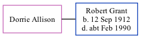

Dorrie Grant (née Allison)
[ Home ] | [ Calendar ] | [ Surnames Index ] | [ Family History ]Dorrie Allison and married Robert Grant (a police constable) in Durham, Durham, England around Nov 19401.
Citations
- England & Wales Marriages 1837-2005 - Findmypast
Family Tree
Generated by ged2site. Last updated on Nov 13, 2024